EL RESCOLDO · Panadería en El Bosque, Cádiz
Panadería El Rescoldo · El Bosque, Cádiz.
Pan, oficio
y tradición.
Hay lugares que forman parte de lo cotidiano. Una calle, un saludo, una parada a por pan.
El Rescoldo es una panadería en la calle Córdoba, en El Bosque. Un punto de encuentro con ese alimento sencillo que siempre encuentra su sitio en la mesa.
Acércate a conocernos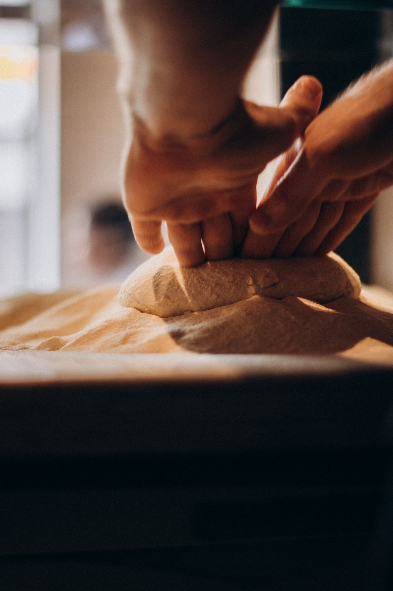
Del horno
al mostrador.
El mundo de la panadería, en tres miradas.
Pregúntanos por la selección disponible.
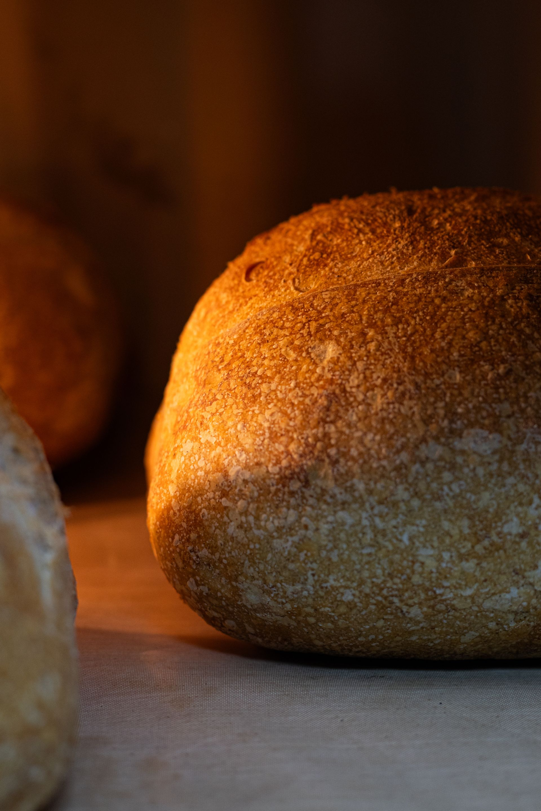
Pan.
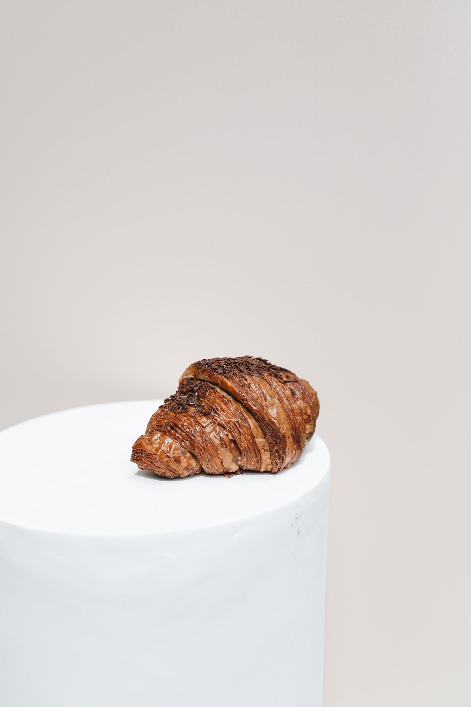
Bollería.
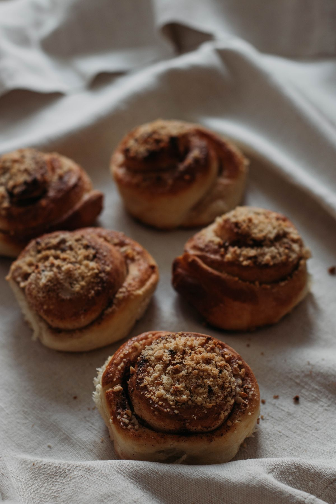
Dulces.
Imágenes ilustrativas de categorías generales. No constituyen un catálogo ni confirman la disponibilidad de los productos fotografiados.
UN HOMENAJE A LA PANADERÍA
El valor de
las manos.
Harina que se transforma. Masa que toma forma. Calor que deja huella. Una mirada a los gestos y las texturas del oficio panadero.
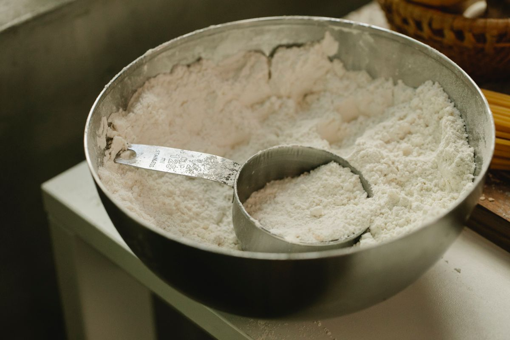
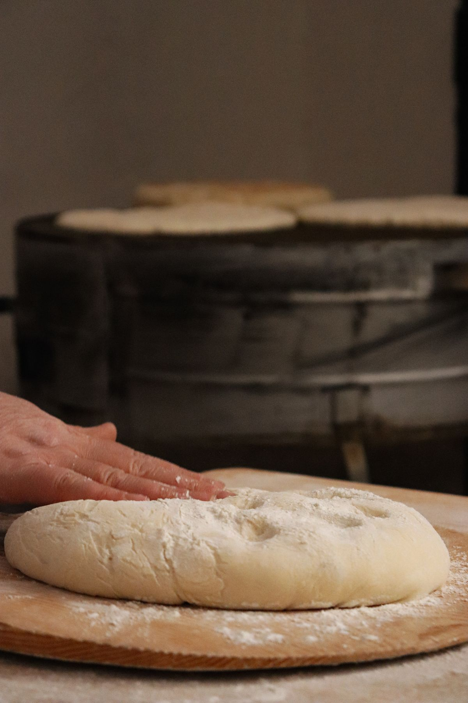
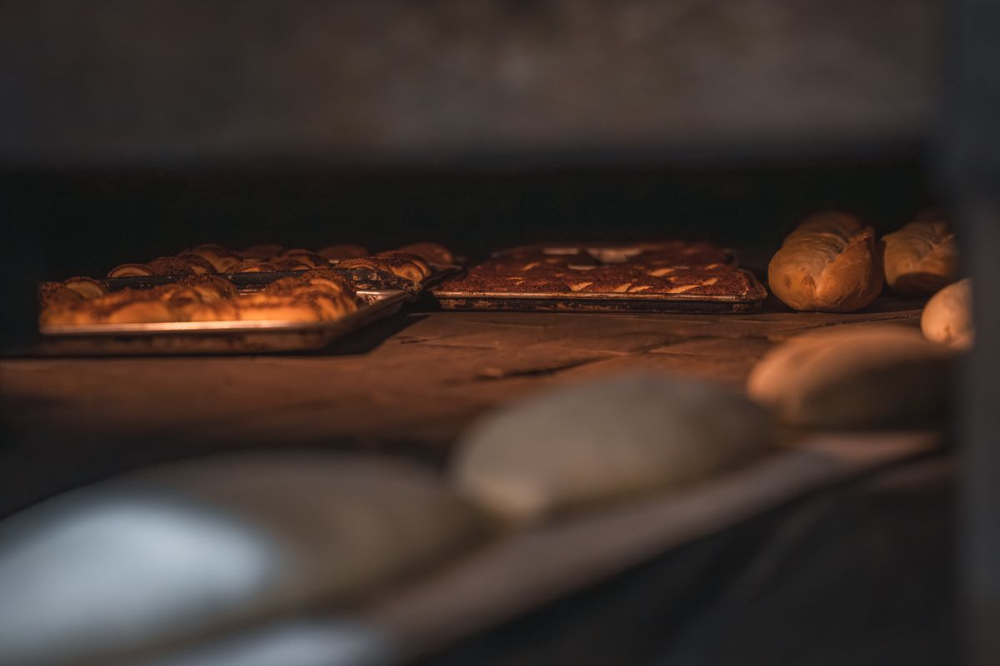
Una secuencia visual del proceso general de panadería. Fotografías de archivo; no documentan las instalaciones ni los métodos de El Rescoldo.
Una mirada al
mundo del pan.
Texturas que casi se pueden tocar.
Selecciona una fotografía para ampliarla.

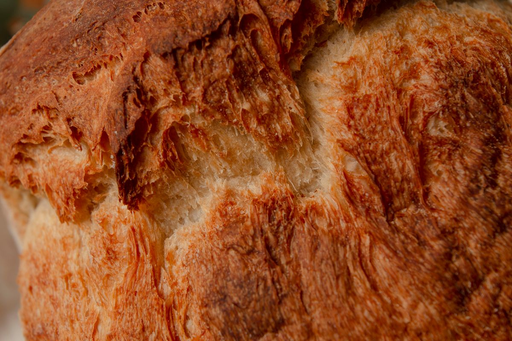
01 / CORTEZA
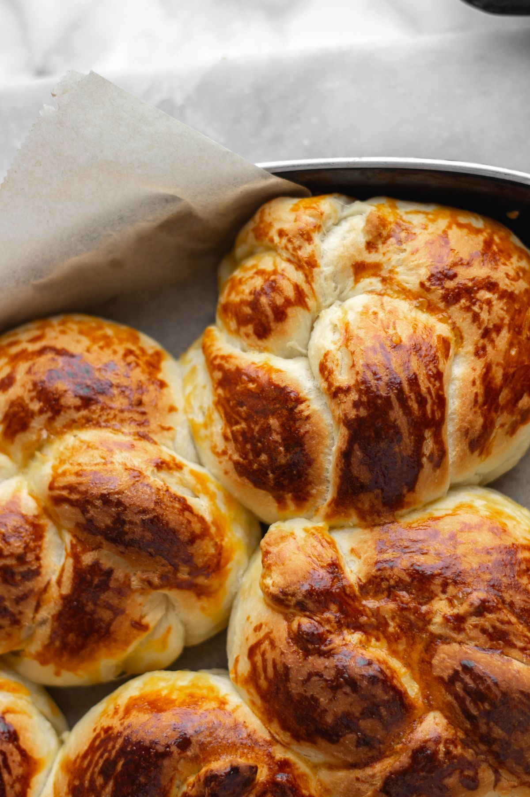
02 / DORADO
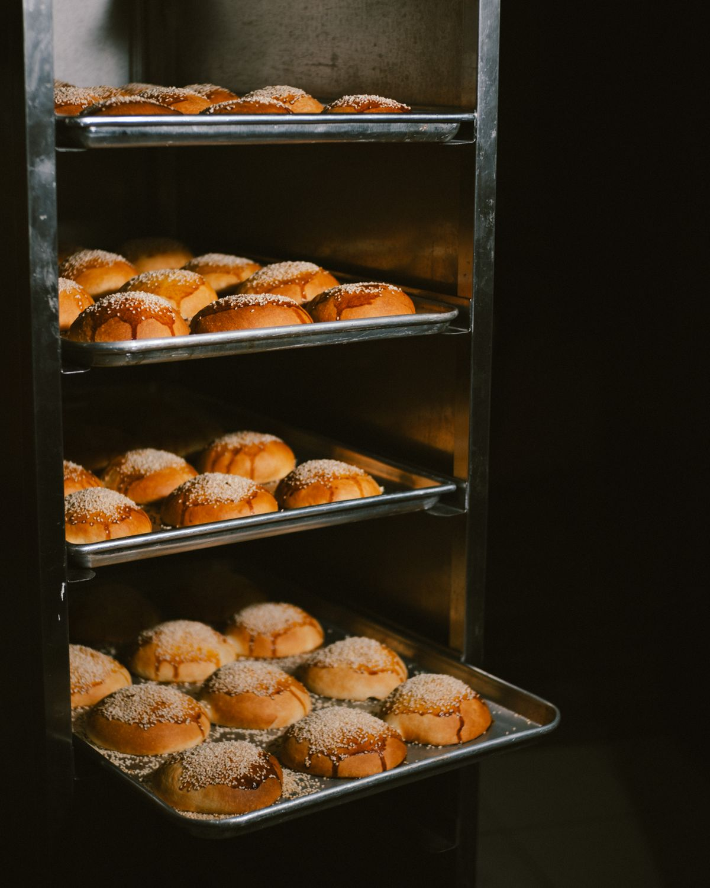
03 / BANDEJAS
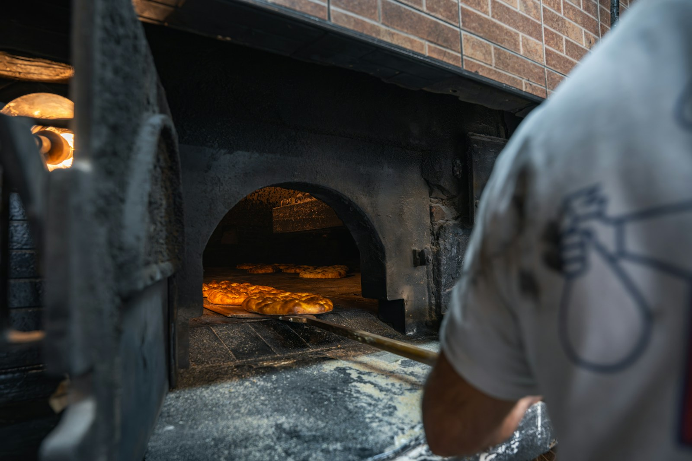
04 / OBRADOR
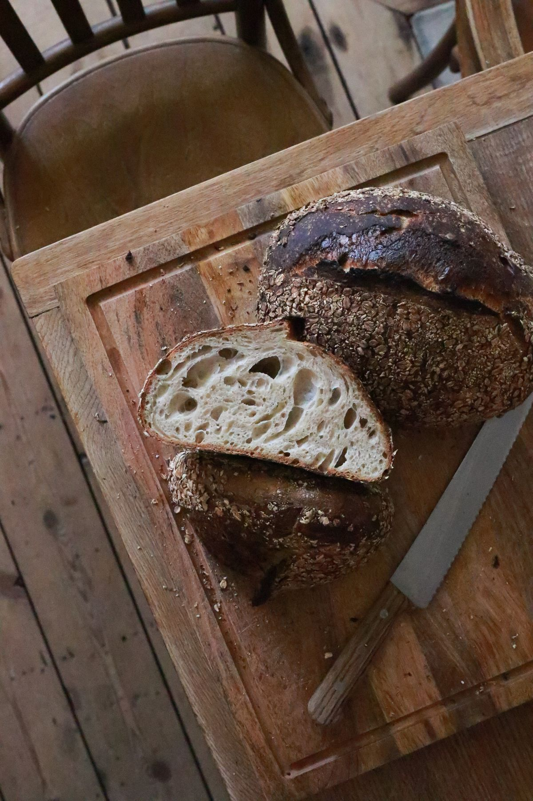
05 / MIGA
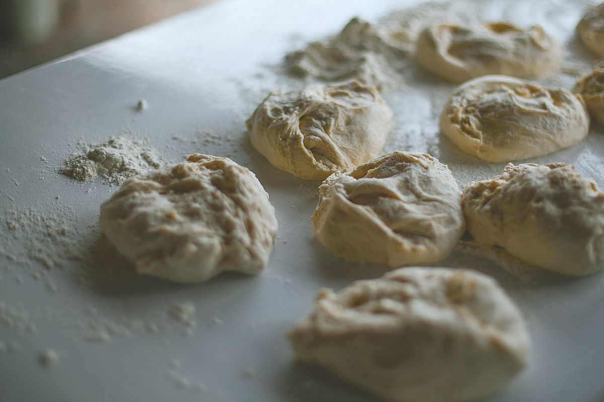
06 / MASATodas las fotografías de esta web son ilustrativas. No representan necesariamente los productos, el equipo o las instalaciones de El Rescoldo.